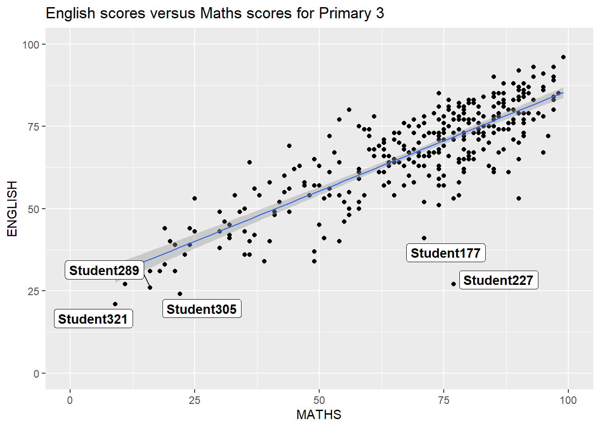
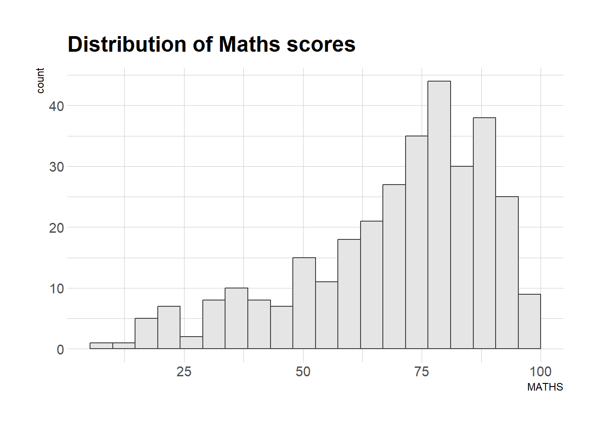

pacman::p_load(tidyverse, patchwork,
ggthemes, hrbrthemes,
ggrepel) 2 Beyond ggplot2 Fundamentals
2.1 Learning Outcome
2.2 Content
Beyond ggplot2 Themes
Beyond ggplot2 Annotation
Beyond ggplot2 facet
2.3 Getting started
2.3.1 Installing and loading the required libraries
Before we get started, it is important for us to ensure that the required R packages have been installed. If yes, we will load the R packages. If they have yet to be installed, we will install the R packages and load them onto R environment.
The chunk code on the right will do the trick.
2.3.2 Importing data
The code chunk below imports exam_data.csv into R environment using read_csv() function of readr package. readr is one of the tidyverse package.
exam_data <- read_csv("chap02/data/Exam_data.csv")Year end examination grades of a cohort of primary 3 students from a local school.
There are a total of seven attributes. Four of them are categorical data type and the other three are in continuous data type.
- The categorical attributes are: ID, CLASS, GENDER and RACE.
- The continuous attributes are: MATHS, ENGLISH and SCIENCE.
2.4 Beyond ggplot2 Annotation
One of the challenge in plotting statistical graph is annotation, especially with large number of data points.

ggplot(data=exam_data,
aes(x= MATHS,
y=ENGLISH)) +
geom_point() +
geom_smooth(method=lm,
size=0.5) +
geom_label(aes(label = ID),
hjust = .5,
vjust = -.5) +
coord_cartesian(xlim=c(0,100),
ylim=c(0,100)) +
ggtitle("English scores versus Maths scores for Primary 3")2.4.1 Working with ggrepel
ggrepel is an extension of ggplot2 package which provides geoms for ggplot2 to repel overlapping text as in our examples on the right. We simply replace geom_text() by geom_text_repel() and geom_label() by geom_label_repel.
ggplot(data=exam_data,
aes(x= MATHS,
y=ENGLISH)) +
geom_point() +
geom_smooth(method=lm,
size=0.5) +
geom_label_repel(aes(label = ID),
fontface = "bold") +
coord_cartesian(xlim=c(0,100),
ylim=c(0,100)) +
ggtitle("English scores versus Maths scores for Primary 3")
2.5 Beyond ggplot2 Themes
ggplot2 comes with eight built-in themes, they are: theme_gray(), theme_bw(), theme_classic(), theme_dark(), theme_light(), theme_linedraw(), theme_minimal(), and theme_void().
ggplot(data=exam_data,
aes(x = MATHS)) +
geom_histogram(bins=20,
boundary = 100,
color="grey25",
fill="grey90") +
theme_gray() +
ggtitle("Distribution of Maths scores") Refer to this link to learn more about ggplot2 Themes
:::

:::
2.5.1 Working with ggtheme package
ggthemes provides ‘ggplot2’ themes that replicate the look of plots by Edward Tufte, Stephen Few, Fivethirtyeight, The Economist, ‘Stata’, ‘Excel’, and The Wall Street Journal, among others.
ggplot(data=exam_data,
aes(x = MATHS)) +
geom_histogram(bins=20,
boundary = 100,
color="grey25",
fill="grey90") +
ggtitle("Distribution of Maths scores") +
theme_economist()- It also provides some extra geoms and scales for ‘ggplot2’. Consult this vignette to learn more.

2.5.2 Working with hrbthems package
hrbrthemes package provides a base theme that focuses on typographic elements, including where various labels are placed as well as the fonts that are used.
ggplot(data=exam_data,
aes(x = MATHS)) +
geom_histogram(bins=20,
boundary = 100,
color="grey25",
fill="grey90") +
ggtitle("Distribution of Maths scores") +
theme_ipsum()- The second goal centers around productivity for a production workflow. In fact, this “production workflow” is the context for where the elements of hrbrthemes should be used. Consult this vignette to learn more.

2.5.3 Working with hrbthems package
ggplot(data=exam_data,
aes(x = MATHS)) +
geom_histogram(bins=20,
boundary = 100,
color="grey25",
fill="grey90") +
ggtitle("Distribution of Maths scores") +
theme_ipsum(axis_title_size = 18,
base_size = 15,
grid = "Y")
What can we learn from the code chunk below?
axis_title_sizeargument is used to increase the font size of the axis title to 18,base_sizeargument is used to increase the default axis label to 15, andgridargument is used to remove the x-axis grid lines.

2.6 Beyond ggplot2 facet
In this section, you will learn how to create composite plot by combining multiple graphs. First, let us create three statistical graphics.
p1 <- ggplot(data=exam_data,
aes(x = MATHS)) +
geom_histogram(bins=20,
boundary = 100,
color="grey25",
fill="grey90") +
coord_cartesian(xlim=c(0,100)) +
ggtitle("Distribution of Maths scores")p2 <- ggplot(data=exam_data,
aes(x = ENGLISH)) +
geom_histogram(bins=20,
boundary = 100,
color="grey25",
fill="grey90") +
coord_cartesian(xlim=c(0,100)) +
ggtitle("Distribution of English scores")p3 <- ggplot(data=exam_data,
aes(x= MATHS,
y=ENGLISH)) +
geom_point() +
geom_smooth(method=lm,
size=0.5) +
coord_cartesian(xlim=c(0,100),
ylim=c(0,100)) +
ggtitle("English scores versus Maths scores for Primary 3")2.6.1 Creating Composite Graphics: pathwork methods
It is not unusual that multiple graphs are required to tell a compelling visual story. There are several ggplot2 extensions provide functions to compose figure with multiple graphs. In this section, I am going to shared with you patchwork.
Patchwork package has a very simple syntax where we can create layouts super easily. Here’s the general syntax that combines: - Two-Column Layout using the Plus Sign +. - Parenthesis () to create a subplot group. - Two-Row Layout using the Division Sign \

2.6.2 Working with patchwork
p1 + p2 / p3
2.6.3 Working with patchwork
| will place the plots beside each other, while / will stack them.
(p1 / p2) | p3
To learn more about, refer to Plot Assembly.
2.6.4 Working with patchwork
patchwork also provides auto-tagging capabilities, in order to identify subplots in text:
((p1 / p2) | p3) +
plot_annotation(tag_levels = 'I')
2.6.5 Working with patchwork
patchwork <- (p1 / p2) | p3
patchwork & theme_economist()
2.6.6 Working with patchwork
Beside providing functions to place plots next to each other based on the provided layout. With inset_element() of patchwork, we can place one or several plots or graphic elements freely on top or below another plot.
p3 + inset_element(p2,
left = 0.02,
bottom = 0.7,
right = 0.5,
top = 1)
2.7 Reference
- Patchwork R package goes nerd viral
- ggrepel
- ggthemes
- hrbrthemes
- ggplot tips: Arranging plots
- ggplot2 Theme Elements Demonstration
- ggplot2 Theme Elements Reference Sheet